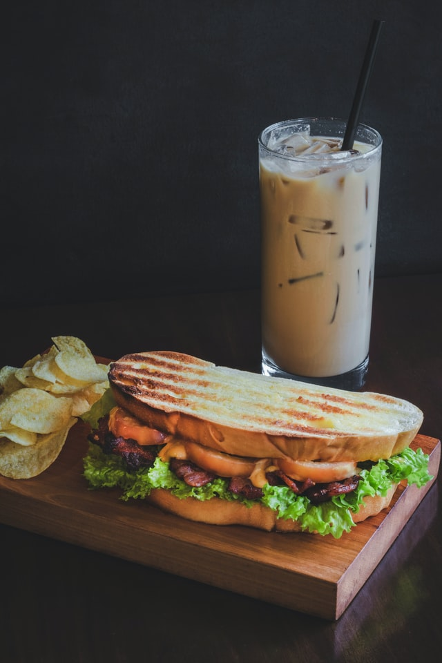

Hot Brown - Turkey sandwich

Description
Not your average hot turkey sandwich, the Hot Brown was invented at the Brown Hotel in Louisville, Kentucky to
absorb the bourbon that guests would enjoy well into the night.
Ingredients
For the turkey (4 portions)
- 2 pounds boneless turkey breast with skin on
- 1 tablespoon kosher salt
- 1 teaspoon herbes de Provence
- 1 teaspoon oil
- 8 slices bacon
- 2 tablespoons salted butter
- 2 tablespoons all-purpose flour
- 2 cups heavy cream
- salt and freshly ground black pepper to taste
- 1 pinch cayenne pepper, or to taste
- 1/2 cup grated Pecorino Romano cheese
- 1 pinch freshly grated nutmeg
For 4 Hot Browns
- 8 slices white bread, toasted
- 12 slices tomato
- 8 tablespoons grated Pecorino Romano cheese, or to taste
- 1 pinch paprika, or to taste
- 4 teaspoons chopped Italian parsley, or to taste
Steps
- Preheat the oven to 350 degrees Fº (175 degrees Cº)
- Season the skinless side of the turkey breast with 1/2 of the kosher salt and herbes de Provence. Season the
skin side with the remaining kosher salt. Place turkey skin-side up into an oiled baking dish.
- Roast in the preheated oven until an instant-read thermometer inserted into the turkey registers 148 degrees Fº
(64 degrees Cº), 45 to 60 minutes.
- Place bacon on a baking sheet lined with aluminum foil. Remove turkey from the oven and let cool.
- Bake bacon in the hot oven until about halfway cooked, 10 to 15 minutes
- Melt butter in a pot over medium heat. Stir in flour until combined. Cook, stirring occasionally, until roux
smells like cooked pie crust, about 3 minutes. Whisk in cream all at once. Cook until Mornay sauce is thickened
and starting to boil, about 5 minutes. Immediately turn off the heat.
- Season Mornay sauce with salt, black pepper, and cayenne pepper. Stir in 1/2 cup Pecorino Romano cheese until
combined. Add nutmeg and stir briefly.
- Cut turkey into thick slices. Pull off the skin
- Stack 2 bread slices on top of each other and trim off the crusts. Cut 1 slice into 2 triangles. Place bread in
a small baking dish set on top of a sheet pan. Top bread with 3 slices of turkey. Place 3 tomato slices in
between. Ladle 1/4 of the Mornay sauce all over and cover with 2 tablespoons Pecorino Romano cheese. Sprinkle with
paprika; lay the partially cooked bacon across the top. Repeat with remaining ingredients to make 3 more servings.
- Set an oven rack about 6 inches from the heat source and preheat the oven's broiler
- Bake under the broiler until bacon is crispy and the tops are well browned, about 5 minutes. Place on
napkin-lined plates and sprinkle parsley over each dish.